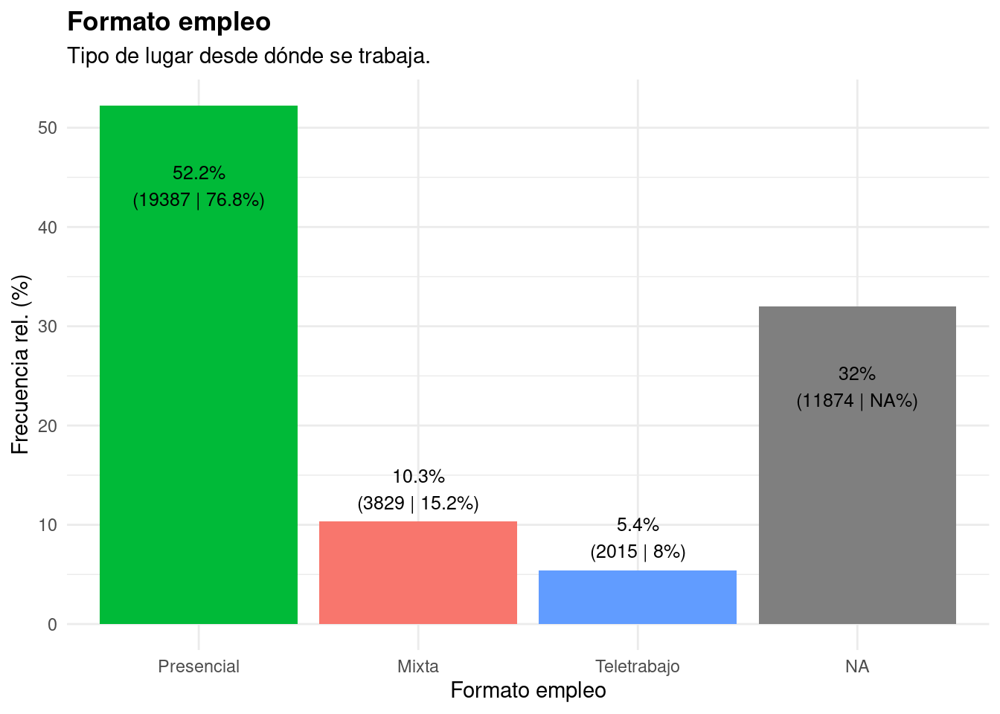

2 Análisis
2.1 Laborum

2.1.1 Horario
2.1.2 Ubicación

2.1.3 Área profesional
2.1.4 Sueldo
2.1.5 Requisitos
2.2 Trabajando
Esta sección presenta los datos del sitio trabajando.cl. Eliminamos los avisos duplicados y aquéllos que requieren un nivel educacional menor al de técnico nivel medio. Quedaron 16.108 ofertas de empleo, entre las fechas de publicación 28 de julio y 27 de octubre de 2021.

2.2.1 Jornada y modalidad
En lo que respecta a la duración de la jornada laboral, la mayor parte de los avisos ofrece una jornada laboral completa, seguidos por aquellos que ofrecen un trabajo por turnos. La proporción de trabajos Part Time supera, por poco, el 1% de los casos. Luego, respecto de la modalidad, destaca que un 14% de los avisos ofrece un trabajo en modalidad mixta, es decir, teletrabajo y presencial. Un 7.4% de los casos ofrecen, por su parte, un trabajo completamente telemático. Se asume que los trabajos restantes tienen una modalidad presencial.
2.2.2 Ubicación
En relación con la región en que se oferta el puesto, más de dos tercios pertenecen a la región Metropolitana. Luego, la región de Antofagasta concentra casi el 9% de los avisos, mientras que las regiones de Valparaíso y Bío Bío representan el 3.8% y el 3.6% de los casos, respectivamente. En el resto de regiones, la concentración de ofertas no alcanza el 3%.

Asimismo, las comunas con mayores ofertas de trabajo son Santiago (16.2%), Las Condes (11%), y Providencia (7.6%), lo cual se condice con la alta concentración de ofertas en la región Metropolitana.

2.2.3 Área profesional o clase del aviso
La clase de aviso con mayor frecuencia es la administración y finanzas, seguida por el comercio y la computación y redes. Asimismo, áreas de desempeño relevantes para DUOC UC, como enfermería, odontología, gastronomía, prevención de riesgos y maquinaria y automotriz destacan entre las diez clases de avisos con mayor frecuencia.
2.2.4 Estudios mínimos
La mayor parte de los avisos solicita unos estudios mínimos de nivel universitario. Le sigue el nivel de técnico profesional superior, y luego el de técnico nivel medio. Niveles de postgrado no cuentan con mayor frecuencia. Hay que considerar que se eliminaron del análisis los niveles de Doctorado, así como aquellos niveles educacionales inferiores al técnico medio.
2.2.5 Requisitos académicos
En la misma línea, la mayor parte de los avisos busca graduados o egresados.

2.2.6 Tipo de cargo
El cargo de analista destaca como aquel con mayor cantidad de ofertas. Sin considerar la heterogénea categoría de ‘Otros cargos’, le sigue el de Jefe de Área/Sección, Ingeniero, Administrativo y Técnico. En general, los cargos ofrecidos requieren de estudios superiores.

2.2.7 Sueldo

2.2.8 Requisitos
2.3 Análisis requisitos general
2.3.1 Detección requisitos
data_unificada <- readRDS("input/data_unificada.rds")
data_unificada <-
data_unificada[-which(duplicated(data_unificada$contenido)), ]
detectar <- function(x, y) {
str_detect(x, paste0("(?<![:alpha:])", y, "(?![:alpha:])"))
}
# Excel
data_unificada$req_excel <-
detectar(
data_unificada$contenido,
"(excel|office|hojas de cálculo|hoja de cálculo|hoja de calculo|hojas de cálculo)"
)
# Cuarto medio
data_unificada$req_educamedia <-
detectar(
data_unificada$contenido,
"(enseñanza media|cuarto medio|educación media|educacion media)"
)
# Mayor 18 años
data_unificada$req_dieciocho <-
detectar(data_unificada$contenido, "(18 años|mayor de edad)")
# Inglés
data_unificada$req_ingles <-
detectar(data_unificada$contenido, "(inglés|ingles)")
# Liderazgo
data_unificada$req_liderazgo <-
detectar(data_unificada$requisitos, "(liderazgo|liderando)")
# Años de experiencia
data_unificada$req_experiencia <-
detectar(
data_unificada$requisitos,
"(años de experiencia|experiencia mínima|experiencia de al menos)"
)
# Licencia conducir (B o A4 profesional)
data_unificada$req_licenciaconducir <-
detectar(
data_unificada$contenido,
"(licencia conducir|licencia de conducir|clase b|a4|licencia d)"
)
# Proactividad
data_unificada$req_proactividad <-
detectar(data_unificada$contenido,
"(proactiva|proactividad|proactivas)")
# Responsable
data_unificada$req_responsabilidad <-
detectar(data_unificada$requisitos, "(responsable|responsabilidad)")
# Autocrítica
#data_unificada$req_autocritica<-detectar(data_unificada$requisitos,"(autocrítica|autocritica)") #Bajo número y repetidos
# Paciencia
data_unificada$req_paciencia <-
detectar(data_unificada$requisitos, "(paciencia)") #Bajo número y repetidos
# Puntualidad
data_unificada$req_puntualidad <-
detectar(data_unificada$requisitos, "(puntualidad)") #Bajo número y repetidos
# Trabajo en equipo
data_unificada$req_trabajoequipo <-
detectar(data_unificada$contenido, "(trabajo en equipo)")
# Trabajo bajo presión
data_unificada$req_bajopresion <-
detectar(data_unificada$contenido, "(trabajo bajo presión)")
# Título
data_unificada$req_titulado <-
detectar(data_unificada$contenido, "(título|titulo|titulado)")
# Título
data_unificada$req_magister <-
detectar(data_unificada$contenido, "(magister|maestría|maestria)")
# Dicción
data_unificada$req_diccion <-
detectar(data_unificada$contenido, "(diccion|dicción)")
# Autocad
data_unificada$req_autocad <-
detectar(data_unificada$contenido, "(autocad)")
# SAP
data_unificada$req_sap <- detectar(data_unificada$contenido, "(sap)")
# ERP (incluye SAP)
data_unificada$req_erp <-
detectar(data_unificada$contenido, "(erp|sap)")
# Certificación SEC
data_unificada$req_erp <-
detectar(data_unificada$contenido,
"(certificación sec|certificacion sec)")
# BMS
data_unificada$req_pvsyst <-
detectar(data_unificada$contenido, "(bms)")
## Enfermería
# Inscripción superintendencia de salud
data_unificada$req_inscripcion_superintendencia_salud <-
detectar(data_unificada$contenido, "(superintendencia de salud|sis)")
# Primeros auxilios (incluye rcp)
data_unificada$req_primerosauxilios <-
detectar(data_unificada$contenido, "(primeros auxilios|rcp)")
# UCI Urgencia
#data_unificada$req_uciurgencia<-detectar(data_unificada$requisitos,"(uci|urgencia)") #Revisar "urgencia"
# RCP
data_unificada$req_rcp <- detectar(data_unificada$contenido, "(rcp)")
## Gastronomía
# Gramaje y porcionamiento
data_unificada$req_gramaje <-
detectar(data_unificada$contenido, "(gramaje|porcionamiento)")
# Repostería
data_unificada$req_reposteria <-
detectar(data_unificada$requisitos, "(repostería|reposteria)")
# Cocina fría
data_unificada$req_cocina_fria <-
detectar(data_unificada$requisitos, "(cocina fría|cocina fria)")
# Cocina caliente
data_unificada$req_cocina_caliente <-
detectar(data_unificada$requisitos, "(cocina caliente)")
#Microsoft Office
data_unificada$req_office <-
detectar(data_unificada$requisitos, "(office|microsoft office)")
#Excel
data_unificada$req_excel <-
detectar(data_unificada$requisitos, "(excel)")
#SQL
data_unificada$req_sql <-
detectar(data_unificada$requisitos, "(sql)")
#Adobe Analytics
data_unificada$req_analytics <-
detectar(data_unificada$requisitos, "(analytics|adobe analytics)")
# ISO 9001
data_unificada$req_iso_9001 <-
detectar(data_unificada$requisitos, "(9001|iso 9001)")
#Alimentación colectiva
data_unificada$req_al_colectiva <-
detectar(data_unificada$requisitos, "(alimentación colectiva|alimentacion colectiva)")
#Almacenamiento/bodegaje
data_unificada$req_bodega <-
detectar(data_unificada$requisitos, "(almacenamiento|bodegaje|bodega)")
#HACCP
data_unificada$req_haccp <-
detectar(data_unificada$requisitos, "(haccp)")
#Curso cajero bancario
data_unificada$req_cajero_banc <-
detectar(data_unificada$requisitos, "(cajero bancario)")
#SAP R3
data_unificada$req_r3 <-
detectar(data_unificada$requisitos, "(r3|r/3|r 3)")
#Softland
data_unificada$req_softland <-
detectar(data_unificada$requisitos, "(softland|soft land)")
#IFRS
data_unificada$req_ifrs <-
detectar(data_unificada$requisitos, "(ifrs)")
#Normativa/legislación
data_unificada$req_normativa <-
detectar(data_unificada$requisitos, "(norma|normativa|legislacion|legislación)")
#KPI
data_unificada$req_kpi <-
detectar(data_unificada$requisitos, "(kpi)")
## Auditoría y contabilidad
#Balances (cierres de)
data_unificada$req_balance <-
detectar(data_unificada$requisitos, "(balance)")
#Análisis cuentas contables
data_unificada$req_contable <-
detectar(data_unificada$requisitos, "(cuenta contable|cuentas contables)")
#Experiencia liquidación
data_unificada$req_liquidacion <-
detectar(data_unificada$requisitos, "(liquidacion|liquidación)")
# CRM
data_unificada$req_crm <-
detectar(data_unificada$requisitos, "(crm)")
# Portales B2B
data_unificada$req_b2b <-
detectar(data_unificada$requisitos, "(b2b)")
# Manejo redes sociales
data_unificada$req_rrss <-
detectar(data_unificada$requisitos, "(rrss|redes sociales|red social)")
# Bootstrap
data_unificada$req_bootstrap <-
detectar(data_unificada$requisitos, "(bootstrap)")
#JavaScript
data_unificada$req_js <-
detectar(data_unificada$requisitos, "(js|javascript|java script)")
#AWS
data_unificada$req_aws <-
detectar(data_unificada$requisitos, "(aws)")
#Python
data_unificada$req_python <-
detectar(data_unificada$requisitos, "(python)")
#MySQL
data_unificada$req_mysql <-
detectar(data_unificada$requisitos, "(mysql)")
#Linux
data_unificada$req_linux <-
detectar(data_unificada$requisitos, "(linux)")
#Visual Basic
data_unificada$req_visual_basic <-
detectar(data_unificada$requisitos, "(visual basic|visualbasic)")
#CSS
data_unificada$req_css <-
detectar(data_unificada$requisitos, "(css)")
#Docker
data_unificada$req_docker <-
detectar(data_unificada$requisitos, "(docker)")
#Frontend
data_unificada$req_frontend <-
detectar(data_unificada$requisitos, "(frontend)")
#React
data_unificada$req_react <-
detectar(data_unificada$requisitos, "(react)")
#Material-UI
data_unificada$req_mui <-
detectar(data_unificada$requisitos, "(ui)")
#UX
data_unificada$req_ux <-
detectar(data_unificada$requisitos, "(ux)")
#Git
data_unificada$req_git <-
detectar(data_unificada$requisitos, "(git)")
#MongoDB
data_unificada$req_mongodb <-
detectar(data_unificada$requisitos, "(mongodb|mongo db)")
#PHP
data_unificada$req_php <-
detectar(data_unificada$requisitos, "(php)")
#HTML
data_unificada$req_html <-
detectar(data_unificada$requisitos, "(html)")
#C#
data_unificada$req_c <-
detectar(data_unificada$requisitos, "(c#|visual c#|visualc#)")
#JQuery
data_unificada$req_jquery <-
detectar(data_unificada$requisitos, "(jquery)")
#API
data_unificada$req_api <-
detectar(data_unificada$requisitos, "(api|apis|api's)")
#Appium
data_unificada$req_oracledb <-
detectar(data_unificada$requisitos, "(oracledb|oracle db)")
#Materiales
data_unificada$req_materiales <-
detectar(data_unificada$requisitos, "(materiales)")
#Costos
data_unificada$req_costos <-
detectar(data_unificada$requisitos, "(costo|costos)")
#Piping
data_unificada$req_piping <-
detectar(data_unificada$requisitos, "(piping)")
#Adobe Suite
data_unificada$req_suite <-
detectar(data_unificada$requisitos, "(adobe suite|adobesuite|suite)")
#E-Learning
data_unificada$req_elearning <-
detectar(data_unificada$requisitos, "(e learning|e-learning|elearning)")
#Photoshop
data_unificada$req_photoshop <-
detectar(data_unificada$requisitos, "(photoshop)")
#Ilustrator
data_unificada$req_ilustrator <-
detectar(data_unificada$requisitos, "(ilustrator|illustrator)")
#InDesign
data_unificada$req_indesign <-
detectar(data_unificada$requisitos, "(indesign|in design)")
#Lay out
data_unificada$req_layout <-
detectar(data_unificada$requisitos, "(lay out|layout)")
#Curaciones
data_unificada$req_protec_radiologica <-
detectar(data_unificada$requisitos, "(protección radiológica|proteccion radiologica|protección radiologica|proteccion ideológica)")
#Tronadura
data_unificada$req_inventario <-
detectar(data_unificada$requisitos, "(inventario)")
#Komatsu 930 u 830
data_unificada$req_930 <-
detectar(data_unificada$requisitos, "(930|830|komatsu)")
#HVAC
data_unificada$req_hvac <-
detectar(data_unificada$requisitos, "(hvac)")
#RRHH
data_unificada$req_rrhh <-
detectar(data_unificada$requisitos, "(rrhh|recursos humanos)")
#Opera
data_unificada$req_supply_chain <-
detectar(data_unificada$requisitos, "(supply chain|supply)")
#Mantenimiento
data_unificada$req_mantenimiento <-
detectar(data_unificada$requisitos, "(mantenimiento|mantencion|mantención)")
#Conocimientos TPM
data_unificada$req_tpm <-
detectar(data_unificada$requisitos, "(tpm)")
#5S
data_unificada$req_5s <-
detectar(data_unificada$requisitos, "(5s)")
#ISO 45001
data_unificada$req_iso_45001 <-
detectar(data_unificada$requisitos, "(45001|iso 45001)")
#OHSAS 18001
data_unificada$req_ohsas <-
detectar(data_unificada$requisitos, "(ohsas|18001)")
#Power BI
data_unificada$req_power_bi <-
detectar(data_unificada$requisitos, "(powerbi|power bi)")
#ADS
data_unificada$req_ads <-
detectar(data_unificada$requisitos, "(ads)")
#E-Commerce
data_unificada$req_ecommerce <-
detectar(data_unificada$requisitos, "(ecommerce|e-commerce|e commerce)")
#After Effects
data_unificada$req_aftereffects <-
detectar(data_unificada$requisitos, "(aftereffects|after effects)")
#Indesign
data_unificada$req_indesign <-
detectar(data_unificada$requisitos, "(indesign|in design)")
#Google Ads
data_unificada$req_googleads <-
detectar(data_unificada$requisitos, "(googleads|google ads)")
#Google Analytics
data_unificada$req_googleanalytics <-
detectar(data_unificada$requisitos, "(google analytics)")
#SEO
data_unificada$req_seo <-
detectar(data_unificada$requisitos, "(seo)")
#SEM
data_unificada$req_sem <-
detectar(data_unificada$requisitos, "(sem)")
#Adobe Creative
data_unificada$req_creative <-
detectar(data_unificada$requisitos, "(adobe creative|creative)")
#HPLC
data_unificada$req_hplc <-
detectar(data_unificada$requisitos, "(hplc)")
#Wordpress
data_unificada$req_wordpress <-
detectar(data_unificada$requisitos, "(wordpress)")
#GMP
data_unificada$req_gmp <-
detectar(data_unificada$requisitos, "(gmp)")## $Logística##
## $`Administración y Finanzas`##
## $`Computación y redes`
##
## $`Prevención riesgos`##
## $Comercio##
## $Cultura##
## $`Auditoría y contabilidad`##
## $`Química y farmacia`##
## $Enfermería##
## $`Publicidad y RR.PP`##
## $Construcción##
## $`Diseńo y Audiovisual`##
## $Geología##
## $Gastronomía##
## $`Hotelería y turismo`##
## $`Maquinaria y automotriz`##
## $Electricidad##
## $Agrícola##
## $Alimentación##
## $`Tecnología médica`##
## $Medioambiente##
## $Veterinario##
## $Otros##
## $Odontología##
## $RRPP##
## $`Diseño y Audiovisual`##
## $Publicidad##
## $`Geografía y geomática`##
## $Deporte